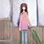

女人产后私处松弛，怎么办？送你一个紧致秘诀！
你是不是私处松弛、干涩，有阴吹现象，房事质量不高
你是不是也会有月经不正常，白带有异味、瘙痒？
你是不是尝试各种方法，但是私处问题还是反反复复？
如果你有出现以上任一问题，那么，恭喜你来对地方了。接下来我要告诉你一个真实有效的私密护理方法，让你回到紧致水嫩的状态，女人的那些尴尬问题不再有!
关注老师微信号： wx (长按复制)
免费咨询晶晶老师
去朋友圈看《私护6大保养手册》
辣妈简单一招 ，重回少女般紧致！
用户：南昌梁女士年龄:32岁
问题：私处松弛、干涩，阴吹问题
我和老公结婚五年了，他属于那方面特别强的那种，前两年基本每一两天都要来一次。直到儿子的出生，我那时候选择顺产，后来就发现私处严重松弛，还有点失禁异味特别严重。 以前老公爱爱时总会说很多甜言蜜语，前戏，爱抚和亲吻，生完孩子后一切都变了，再后来连碰都不碰我，心里深深撕痛。
去检查时才发现自己有严重的问题，如果不及时处理很有可能引发很多问题。当我意识到问题严重时我心里很害怕，开始疯狂的去找各种缩阴方法却一点效果都没有。幸好闺蜜给我介绍了老师，加了她的微信后，她问了我很多问题，把我的问题一一记录清楚，后来根据我的情况定制私密护理方案，看起来挺简单方便的。几天后，我发现私处开始排出脏东西，连着好几天，不过颜色一次比一次浅。
一段时间后，就明显感觉到了变化。以前松弛很严重味道也重，还有点失禁，现在下面比较清爽也没有失禁，偷偷摸摸私密处总感觉润润的，没以前那么干了。脸上皮肤也顺着变好了，每次洗脸都能感觉出来很光滑紧致，最重要的是斑点改善了很多。老公现在可黏我了，说我那里变得跟以前一样紧致了，让他很兴奋。
关注老师微信号： wx (长按复制)
免费咨询晶晶老师
去朋友圈看《私护6大保养手册》
我的难言之隐改善了！
用户:惠州王女士年龄:26岁
问题：私处瘙痒伴有轻微松弛，有异味
我今年才26岁，和男朋友在一起两年了，大学毕业后我们就住在一起，过上了同居的生活。但是今年我时常感觉下体有点痒，洗了洗没事了，过了几天又开始痒了，还有一股异味非常难闻，爱爱的时候还干涩疼痛。我真的好惊慌，我还这么年轻也还没生孩子呢。
因为这问题太尴尬了，都不敢和别人说,只能自己上网找找方法。用妇炎洁清洗也无效最后无意中看到了老师发布的关于私处护理的文章，还公布了她的个人微信号让我们免费咨询。我抱着试试看的态度加了她，先是看了她的朋友圈，里面有很多缩阴经历，还有特别多的女性私处护理知识。
我问了她很多问题，她都很耐心给我解答，还说我这个问题不严重，只要调理一段时间就会好。最后按老师推荐的方法去做，很简单，用了之后就明显改善了很多，私处排出一大团带褐色的分泌物，老师说那是私处里面的脏东西。一段时间后，果然私处的异味没了，也不痒了，白带也正常了，整个人的气色都变好了，男朋友还说我变得越来越漂亮了。私处没有护理好，对女人的伤害太大了，希望姐妹们都好好爱护好自己。
关注老师微信号： wx(长按复制)
免费咨询晶晶老师
去朋友圈看《私护6大保养手册》
二胎妈妈私处松弛缓解，挽救婚姻
用户:深圳朱女士年龄:34岁
问题：私处松弛、干涩，卵巢老化
我是两个孩子的妈妈了，都是顺产的，结果私处松弛了、也有了各种私处问题，脸上的色斑也越来越多。最令我难堪的是，和老公爱爱时，总会发出噗嗤噗嗤的"放屁声"，松松垮垮的，一点感觉都没有，基本上都是草草结束了。老公虽然没有说什么，但是他现在越来越晚回家了，对我越来越冷淡了...
为了尽快改善，我用尽了办法。什么外用，内用的方法都试了，但私处依然又痒又臭，还很干涩；各种方法一箩筐，然而都没用，还白白浪费钱！！！！
无意中，我加了一个专门讨论私处护理的微信群，其中有一个叫晶晶老师很受欢迎，大家都找她讨教改善私密的方法。我也私下加了她微信，和她倒了一肚子苦水。她了解我的问题之后，说我这个情况比较严重，调理不好很容易引发各种问题，我快吓坏了。最后晶晶老师结合我的情况，推荐了私处护理方法给我，叫我按照她说的去做，就能调理好，叫我不用过于担忧。
按照她给的方法，每天坚持，很快就看到变化，私处问题就减轻了，那里就不臭了也不痒了，清清爽爽，效果惊人啊。一段时间后，变化更明显了，那里很快变紧，收缩很有力，下面变得水润润粉嫩嫩的。现在高潮又回来了，老公每天夜里都"动手动脚"，看得出他又迷上我了。
关注老师微信号：wx 长按复制)
免费咨询晶晶老师
去朋友圈看《私护6大保养手册》
如果你不想因为私处毒素导致瘙痒、恶臭味、干涩、私处松弛，甚至丢了男友，毁掉婚姻，变得年老色衰孤独一身，不想孤枕难眠，甚至变成梅艳芳第二，立即加老师微信：wx 【←长按复制加微信好友】，她将根据您的身体情况提供一对一的私密护理方法，让你真正私处紧致，女人味十足！健健康康做宝妈，做女人！她的朋友圈还有很多姐妹缩阴的真实经历和经验。
微信号:wx
去朋友圈看
《私护6大保养手册》手册
热门评论发表评论
徐一生 云南玉溪
我孩子6岁多了，现在明显爱爱的时候有阴道里有噗噗的声音，不知道找晶晶有没有效果？
3天前 举报 265
作者回复:肯定有效果的，你可以加 晶晶 好友问一下咨询，或者去她看看朋友圈
3天前 举报 260
卿帘生香 吉林长春
用过很多方法都不管用，快绝望了，希望楼主分享真实
2天前 举报 733
作者回复：绝对真实，不过没办法发你照片看 ^_^
2天前 举报 728
一米阳光 江苏苏州
楼主你真是用了2个月，就有明显的紧了？
3天前 举报 423
作者回复：是的，大约用了1个月，炎症都好了，但还不够，又用了一个月，基本上能明显感觉不松了，紧的感觉自己和老公都能感觉到
2天前 举报 524
浅吻 天津
为男友多次怀孕流产，结果阴道松弛了、也有了各种妇科炎症，男友不喜欢碰我了，怎么办
2天前 举报 138
作者回复：你可以和 晶晶聊聊，相信她一定会帮到你的。
2天前 举报 105
 云中的angel 广东潮州
跟我一样试过至少不下4，5种缩阴产品，都没效果的举手
3天前 举报 265
作者回复：我第一个举手。真的，诚心建议你跟 晶晶 聊聊
3天前 举报 360
携手一生 北京东城
感谢楼主分享，我长期阴道干涩,有异味,先加上看看，反正不差这一次了
今天 举报 944
微微一笑很倾城 甘肃兰州
已经加上了，朋友圈确实好多成功的朋友，还在犹豫要不要再试一次
今天 举报 528
作者回复：我很理解你的感受。但我以过来人的经验告诉你，真的没什么好犹豫的，给自己一个机会，或许就是新的可能。
今天 举报 463
绿围 江苏南京
我谈过4个男朋友，性生活频繁加上一次堕胎，导致阴道很松弛没了感觉！婚期临近，我很着急解决这个闹心的问题，如果用好了，一定给楼主包个大红包
3天前 举报 916
美到没朋友啊 河南信阳
刚加上，希望有效果，能跟楼主一样解决私处松弛的烦恼
4天前 举报 321
关注提示
①复制微信号：wx ，回到微信主页面。
②点击微信右上角的"+"，会出现"添加朋友"，粘贴个人微信号即可关注。
③请认准 晶晶 老师唯一个人微信号（非公众号）